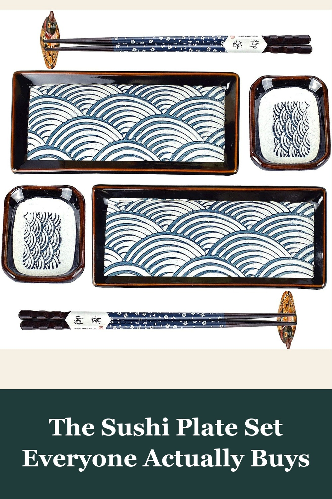
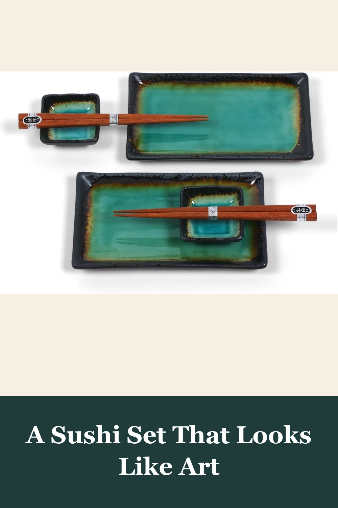
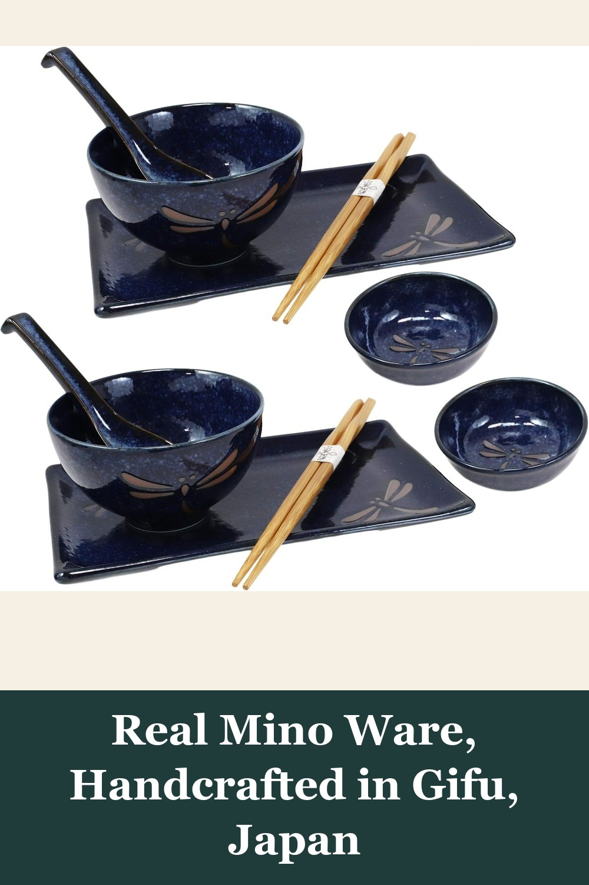

Artcome 8 Piece Japanese Style Ceramic Sushi Plate Dinnerware Set for Wedding Housewarming
A hand-painted wave-pattern set for two — 2 sushi plates, 2 sauce dishes, chopsticks, and holders, packed in a real gift box. The set behind 500+ Amazon reviews calling it 'thick,' 'elegant,' and 'built to last for years.'
This is perfect for Sushi or other items like appetizers. They are very very thick plates and I suspect this will last for many years to come.— verified Amazon buyer
View on Amazon →
Miya Kosui Sushi Set, Green
Stoneware plates in a rich, unglazed-edge green that changes with the light — reviewers keep saying photos don't do it justice. Comes packed in its own black gift box, ready to give as-is.
These are more beautiful in person than what you see in the pictures. The colors are very rich and complex, almost like a piece of art work.— verified Amazon buyer
View on Amazon →
Ebros Gift Japanese Mino Ware Tombo Dragonfly Blue Porcelain Sushi Dinnerware 10pc Set
Designed and fired in Mino, Gifu — the region behind Japan's most celebrated porcelain — with the auspicious 'tombo' dragonfly motif samurai once wore as a symbol of victory. The most authentic piece on this table.
It's an absolutely beautiful set! My husband loves it. We love ramen and sushi and this set is perfect. It came in a beautiful gift box, as well.— verified Amazon buyer
View on Amazon →